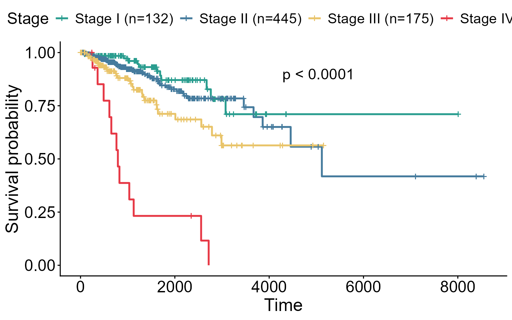
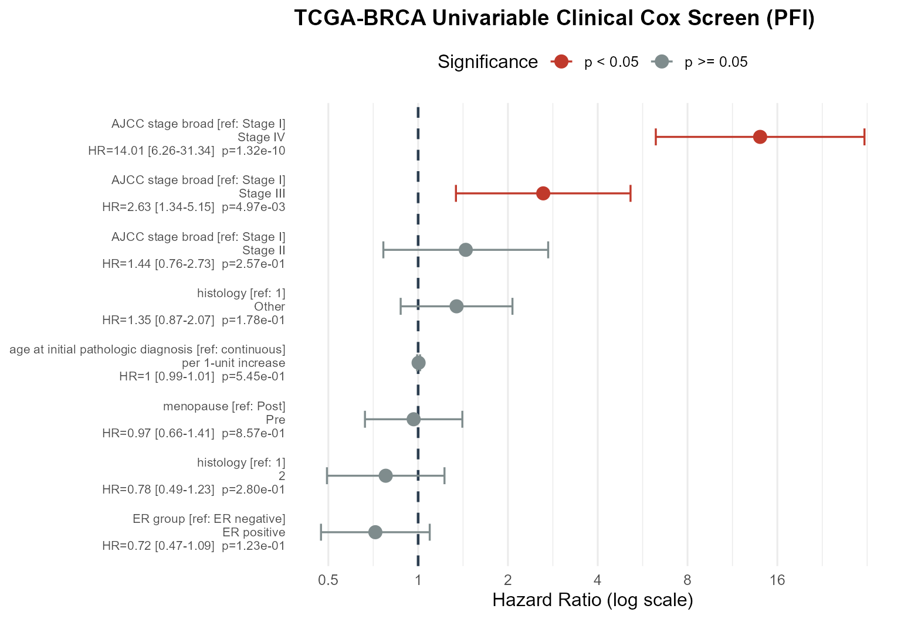
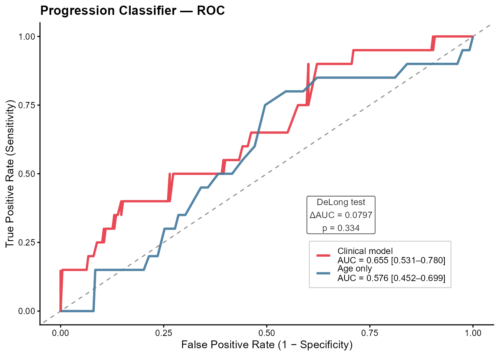

TCGA-BRCA Clinical Modeling and Survival Workflow
Modeling_BRCA.RmdOverview
This vignette walks through the clinical modeling and survival-analysis tools in OmicsKit, applied to the clinical features of the TCGA-BRCA (Breast Invasive Carcinoma) cohort. Every model here is fit live on the clinical table so that the code you read is the code that produced each figure.
The workflow mirrors a standard clinical-research pipeline:
-
Exploratory survival profiling — time-to-event
curves with
nice_KM(). -
Risk screening — univariable hazard ratios with
get_cox(). -
Risk summarization — a forest plot of every model
term with
nice_forest(). -
Binary event prediction — logistic models with
get_glm(). -
Performance evaluation — model discrimination with
nice_ROC().
1. Data Loading and Preparation
We load the package and the bundled clinical modeling table, then
build a tidy analysis frame. TCGA clinical fields use empty strings for
missing values, so we convert those to NA up front and keep
only the columns we model.
library(OmicsKit)
data("brca_clinical_modeling_data")
model_vars <- c(
"PFI", "PFI.time",
"age_at_initial_pathologic_diagnosis",
"AJCC_stage_broad", "histological_type",
"menopause_status", "ER_group"
)
brca_model <- brca_clinical_modeling_data[, intersect(model_vars, names(brca_clinical_modeling_data))]
# Treat empty strings as missing so factor levels are clean.
brca_model[brca_model == ""] <- NA
# Collapse sparse categories so each level has enough events to model reliably.
brca_model$histology <- ifelse(
brca_model$histological_type %in% c("Infiltrating Ductal Carcinoma",
"Infiltrating Lobular Carcinoma"),
brca_model$histological_type, "Other"
)
brca_model$histology[is.na(brca_model$histological_type)] <- NA
brca_model$menopause <- ifelse(grepl("^Pre", brca_model$menopause_status), "Pre",
ifelse(grepl("^Post", brca_model$menopause_status), "Post", NA))The clinical endpoint used throughout is the Progression-Free
Interval (PFI, event) and its follow-up time
(PFI.time, in days):
head(brca_model[, c("PFI.time", "PFI", "AJCC_stage_broad", "ER_group")])
#> PFI.time PFI AJCC_stage_broad ER_group
#> 1 1808 1 <NA> <NA>
#> 2 4005 0 <NA> <NA>
#> 3 1474 0 <NA> <NA>
#> 4 1448 0 <NA> <NA>
#> 5 348 0 <NA> <NA>
#> 6 1477 0 <NA> <NA>2. Exploratory Survival Analysis: Kaplan-Meier Curves
nice_KM() builds Kaplan-Meier curves and annotates the
Log-rank p-value. Here we stratify the Progression-Free Interval by
broad AJCC tumor stage. Note the argument names required by the
function: the grouping column goes in gene, and the
survival columns in time_var / event_var.
nice_KM() uses the grouping column’s name (after
title_prefix) as the legend title, so we copy the stage
into a cleanly named column — Stage — to keep the legend
free of underscores, and set title_prefix = "".
km_data <- brca_model[
!is.na(brca_model$AJCC_stage_broad) &
is.finite(brca_model$PFI.time) &
!is.na(brca_model$PFI),
,
drop = FALSE
]
km_data$Stage <- km_data$AJCC_stage_broad
plot_or_message(
nice_KM(
data = km_data,
gene = "Stage",
time_var = "PFI.time",
event_var = "PFI",
title_prefix = "",
colors = c("#2A9D8F", "#457B9D", "#E9C46A", "#E63946"),
conf_int = FALSE
)
)
Kaplan-Meier PFI curves for TCGA-BRCA stratified by broad AJCC tumor stage.
3. Risk Screening: Cox Proportional Hazards
As a first pass we screen each clinical covariate against progression
risk with a univariable Cox model per variable
(get_cox(model = "univariable")). The survival columns are
passed via time_col / event_col and the
predictors via vars. Fitting one model per variable is
robust to sparse categories — a covariate that fails its event-count
checks is skipped on its own instead of taking the whole model down —
and it yields a full set of terms to display.
cox_table <- plot_or_message(
get_cox(
data = brca_model,
time_col = "PFI.time",
event_col = "PFI",
vars = c(
"age_at_initial_pathologic_diagnosis",
"AJCC_stage_broad",
"ER_group",
"histology",
"menopause"
),
model = "univariable"
)
)
#> # A tibble: 8 × 15
#> model model_id variable term term_clean reference HR CI_low CI_high
#> <chr> <chr> <chr> <chr> <chr> <chr> <dbl> <dbl> <dbl>
#> 1 univariable age_at_… age_at_… age_… per 1-uni… continuo… 1.00 0.992 1.01
#> 2 univariable AJCC_st… AJCC_st… AJCC… Stage II Stage I 1.44 0.765 2.73
#> 3 univariable AJCC_st… AJCC_st… AJCC… Stage III Stage I 2.63 1.34 5.15
#> 4 univariable AJCC_st… AJCC_st… AJCC… Stage IV Stage I 14.0 6.26 31.3
#> 5 univariable ER_group ER_group ER_g… ER_positi… ER_negat… 0.719 0.472 1.09
#> 6 univariable histolo… histolo… hist… 2 1 0.779 0.495 1.23
#> 7 univariable histolo… histolo… hist… Other 1 1.35 0.874 2.07
#> 8 univariable menopau… menopau… meno… Pre Post 0.966 0.663 1.41
#> # ℹ 6 more variables: p.value <dbl>, std.error <dbl>, statistic <dbl>,
#> # n_used <int>, n_events <int>, adjusted_for <chr>
cox_table[, c("variable", "term_clean", "reference", "HR", "CI_low", "CI_high", "p.value")]
#> # A tibble: 8 × 7
#> variable term_clean reference HR CI_low CI_high p.value
#> <chr> <chr> <chr> <dbl> <dbl> <dbl> <dbl>
#> 1 age_at_initial_pathologic… per 1-uni… continuo… 1.00 0.992 1.01 5.45e- 1
#> 2 AJCC_stage_broad Stage II Stage I 1.44 0.765 2.73 2.57e- 1
#> 3 AJCC_stage_broad Stage III Stage I 2.63 1.34 5.15 4.97e- 3
#> 4 AJCC_stage_broad Stage IV Stage I 14.0 6.26 31.3 1.32e-10
#> 5 ER_group ER_positi… ER_negat… 0.719 0.472 1.09 1.23e- 1
#> 6 histology 2 1 0.779 0.495 1.23 2.80e- 1
#> 7 histology Other 1 1.35 0.874 2.07 1.78e- 1
#> 8 menopause Pre Post 0.966 0.663 1.41 8.57e- 14. Visualizing Hazard Ratios: Forest Plots
nice_forest() turns the tidy Cox table into a forest
plot. By default it keeps every model term
(p_display = 1), so the plot shows both significant and
non-significant estimates — the point of a forest plot is to see the
whole set of effects and their confidence intervals side by side, not
only the “winners”.
Before plotting we do one cosmetic clean-up: the label columns carry
database-style names with underscores (AJCC_stage_broad,
ER_positive,
age_at_initial_pathologic_diagnosis). A single
gsub() step collapses any run of underscores into one space
across the three columns nice_forest() uses to build its
labels, so nothing on the plot shows an underscore:
# Replace single or repeated underscores with a single space for nicer labels.
label_cols <- c("variable", "term_clean", "reference")
cox_table[label_cols] <- lapply(cox_table[label_cols], function(x) gsub("_+", " ", x))
plot_or_message(
nice_forest(
data = cox_table,
title = "TCGA-BRCA Univariable Clinical Cox Screen (PFI)",
p_display = 1,
sort_by = "estimate"
)
)
Univariable clinical Cox screen for TCGA-BRCA PFI. Every model term is shown; colour marks statistical significance.
5. Binary Event Prediction: Logistic Regression
Alongside the time-to-event view, we can ask a
classification question: from baseline features alone,
which patients go on to progress (PFI = 1) during
follow-up? get_glm() fits a logistic model and returns a
tidy table of odds ratios.
We use genuinely prognostic baseline predictors — tumor stage, age,
receptor status, histology, menopausal status — none of which are
downstream of the outcome, so there is no target leakage. (Treating
PFI as a plain 0/1 label ignores follow-up time; the Cox
model in Section 3 is the time-aware analysis. Here we use it only to
demonstrate binary discrimination.)
glm_result <- plot_or_message(
get_glm(
data = brca_model,
outcome = "PFI",
predictors = c(
"AJCC_stage_broad",
"age_at_initial_pathologic_diagnosis",
"ER_group",
"histology",
"menopause"
)
)
)
#>
#> -- get_glm result (binomial, link = logit) -----------------------------
#> n = 644 | AIC = 444.56 | q-value correction: BH
#>
#> term OR 95% CI p_value q_value
#> AJCC_stage_broadStage II 1.299 [0.607, 3.110] 0.5253 0.529
#> AJCC_stage_broadStage III 2.620 [1.166, 6.495] 0.0261 0.104
#> AJCC_stage_broadStage IV 49.870 [9.934, 383.137] <0.001 <0.001
#> age_at_initial_pathologic_diagnosis 0.989 [0.961, 1.017] 0.4267 0.529
#> ER_groupER_positive 0.641 [0.368, 1.144] 0.1230 0.303
#> histology2 0.432 [0.102, 1.247] 0.1737 0.303
#> histologyOther 1.684 [0.735, 3.537] 0.1894 0.303
#> menopausePre 1.295 [0.579, 2.908] 0.5292 0.529
#> significance
#>
#> *
#> ***
#>
#>
#>
#>
#>
glm_result
#>
#> -- get_glm result (binomial, link = logit) -----------------------------
#> n = 644 | AIC = 444.56 | q-value correction: BH
#>
#> term OR 95% CI p_value q_value
#> AJCC_stage_broadStage II 1.299 [0.607, 3.110] 0.5253 0.529
#> AJCC_stage_broadStage III 2.620 [1.166, 6.495] 0.0261 0.104
#> AJCC_stage_broadStage IV 49.870 [9.934, 383.137] <0.001 <0.001
#> age_at_initial_pathologic_diagnosis 0.989 [0.961, 1.017] 0.4267 0.529
#> ER_groupER_positive 0.641 [0.368, 1.144] 0.1230 0.303
#> histology2 0.432 [0.102, 1.247] 0.1737 0.303
#> histologyOther 1.684 [0.735, 3.537] 0.1894 0.303
#> menopausePre 1.295 [0.579, 2.908] 0.5292 0.529
#> significance
#>
#> *
#> ***
#>
#>
#>
#>
#> Tumor stage carries essentially all of the signal here — the odds of progression rise steeply from Stage I through Stage IV.
6. Performance Evaluation: ROC Curves
To judge how well the baseline model separates progressors from
non-progressors, we evaluate it on a held-out test split and compare the
full clinical model against an age-only baseline.
nice_ROC() takes a named list of fitted
glm objects plus the evaluation data and the
binary outcome. get_glm() stores the fitted
model in attr(result, "model"), which we pass straight
through.
glm_frame <- brca_model[
!is.na(brca_model$PFI),
c("PFI", "AJCC_stage_broad", "age_at_initial_pathologic_diagnosis",
"ER_group", "histology", "menopause")
]
glm_frame <- glm_frame[stats::complete.cases(glm_frame), , drop = FALSE]
set.seed(2025)
train_idx <- sample(nrow(glm_frame), size = floor(0.6 * nrow(glm_frame)))
train <- glm_frame[train_idx, , drop = FALSE]
test <- glm_frame[-train_idx, , drop = FALSE]
fit_full <- attr(
get_glm(
data = train,
outcome = "PFI",
predictors = c("AJCC_stage_broad", "age_at_initial_pathologic_diagnosis",
"ER_group", "histology", "menopause")
),
"model"
)
fit_age <- attr(
get_glm(
data = train,
outcome = "PFI",
predictors = "age_at_initial_pathologic_diagnosis"
),
"model"
)
plot_or_message(
nice_ROC(
models = list("Clinical model" = fit_full, "Age only" = fit_age),
data = test,
outcome = "PFI",
plot_title = "Progression Classifier — ROC"
)
)
ROC comparison for the progression classifier: full clinical model vs. age only.
Session Info
sessionInfo()
#> R version 4.4.2 (2024-10-31 ucrt)
#> Platform: x86_64-w64-mingw32/x64
#> Running under: Windows 11 x64 (build 26200)
#>
#> Matrix products: default
#>
#>
#> locale:
#> [1] LC_COLLATE=English_United States.utf8
#> [2] LC_CTYPE=English_United States.utf8
#> [3] LC_MONETARY=English_United States.utf8
#> [4] LC_NUMERIC=C
#> [5] LC_TIME=English_United States.utf8
#>
#> time zone: America/Bogota
#> tzcode source: internal
#>
#> attached base packages:
#> [1] stats graphics grDevices utils datasets methods base
#>
#> other attached packages:
#> [1] OmicsKit_1.0.0.0000
#>
#> loaded via a namespace (and not attached):
#> [1] utf8_1.2.6 sass_0.4.10 generics_0.1.4
#> [4] tidyr_1.3.2 rstatix_0.7.3 lattice_0.22-6
#> [7] digest_0.6.39 magrittr_2.0.5 pROC_1.19.0.1
#> [10] evaluate_1.0.5 grid_4.4.2 RColorBrewer_1.1-3
#> [13] fastmap_1.2.0 Matrix_1.7-1 jsonlite_2.0.0
#> [16] backports_1.5.1 Formula_1.2-5 survival_3.8-6
#> [19] gridExtra_2.3 purrr_1.2.2 scales_1.4.0
#> [22] textshaping_1.0.5 jquerylib_0.1.4 abind_1.4-8
#> [25] cli_3.6.6 rlang_1.2.0 splines_4.4.2
#> [28] withr_3.0.3 cachem_1.1.0 yaml_2.3.12
#> [31] otel_0.2.0 tools_4.4.2 ggsignif_0.6.4
#> [34] dplyr_1.2.1 ggplot2_4.0.3 ggpubr_0.6.3
#> [37] BiocGenerics_0.52.0 broom_1.0.13 vctrs_0.7.3
#> [40] R6_2.6.1 stats4_4.4.2 lifecycle_1.0.5
#> [43] car_3.1-5 S4Vectors_0.44.0 fs_2.1.0
#> [46] htmlwidgets_1.6.4 ragg_1.5.2 pkgconfig_2.0.3
#> [49] desc_1.4.3 survminer_0.5.2 pkgdown_2.2.0
#> [52] pillar_1.11.1 bslib_0.10.0 gtable_0.3.6
#> [55] glue_1.8.1 Rcpp_1.1.1-1.1 systemfonts_1.3.2
#> [58] xfun_0.54 tibble_3.3.1 tidyselect_1.2.1
#> [61] rstudioapi_0.18.0 knitr_1.51 dichromat_2.0-0.1
#> [64] farver_2.1.2 htmltools_0.5.9 patchwork_1.3.2
#> [67] labeling_0.4.3 carData_3.0-6 rmarkdown_2.31
#> [70] compiler_4.4.2 S7_0.2.2